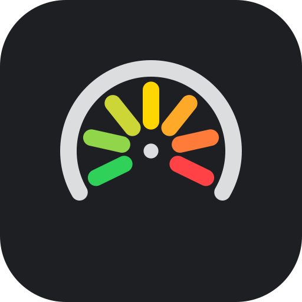

Shows what the panel adds when the host script is installed.
Off keeps one profile and varies its values.
Shows the next update, last successful update, and cycle for each embed.
Loading preview
Using this tool in a desktop browser is strongly recommended.
The app log appears when the editor is served by a running bot.
This page needs JavaScript.